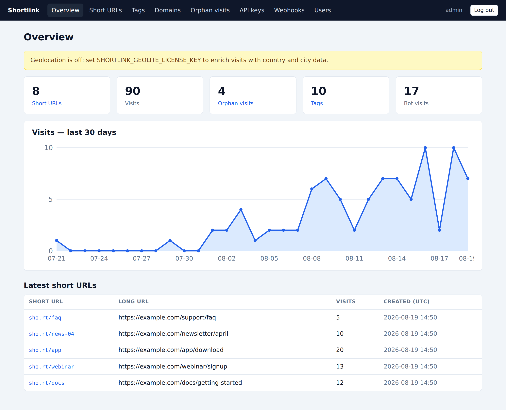
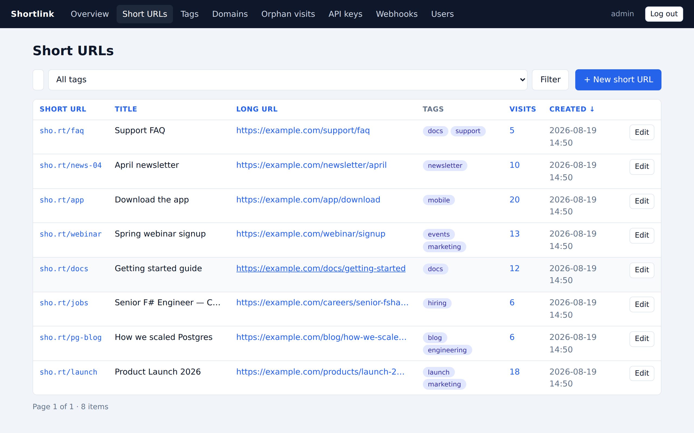
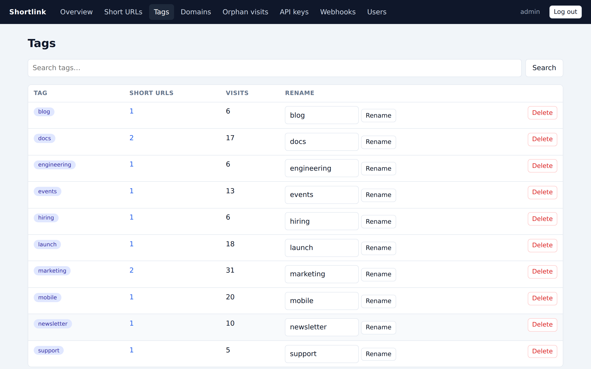
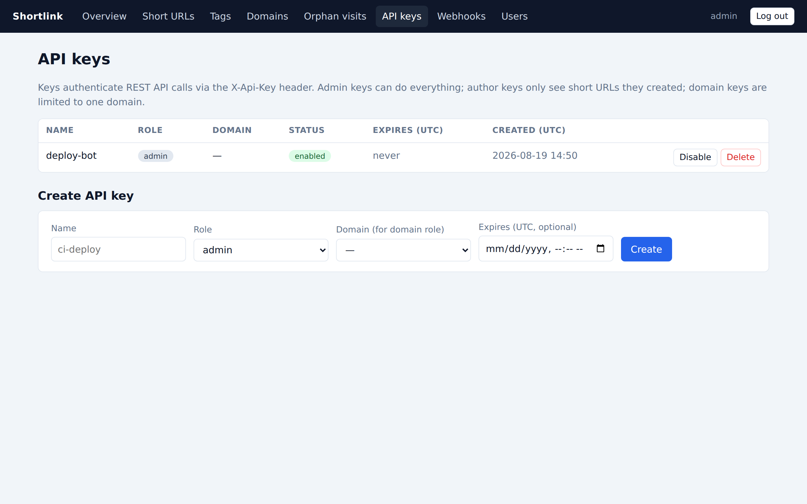
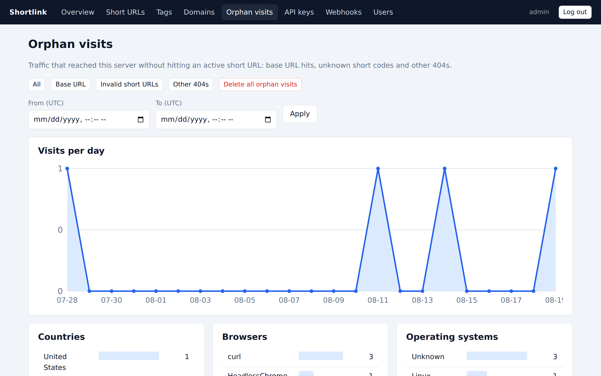

The dashboard
The dashboard lives at /admin. It is server-rendered with htmx —
searches, sorting and pagination update in place without page reloads.
Accounts and roles
Dashboard users are managed under Users (admins only). There are two roles:
- user — manages short URLs and tags, views analytics.
- admin — additionally manages domains, API keys, webhooks and users.
The last remaining admin can be neither deleted nor demoted, so you cannot lock yourself out.
Overview

Counters for short URLs, visits, orphan visits, tags and bot traffic, a 30-day visit chart, and the most recently created links.
Short URLs

The list is searchable (code, long URL, title, domain or tag), filterable by tag, and sortable by any column — including visit counts. See Short URLs for the full lifecycle.
Tags

Tags show how many links and visits they cover; rename or delete them inline. Renames apply to every tagged link at once. Deleting a tag never deletes links.
API keys

Create keys for the REST API here. The plaintext key is shown once at creation — store it somewhere safe. Keys can expire, be disabled temporarily, or deleted. Roles are described in the API reference.
Orphan visits

Traffic that reached the server without hitting an active short URL: base-URL hits, unknown short codes, and other 404s — useful for spotting mistyped links and scanners. Admins can purge them.